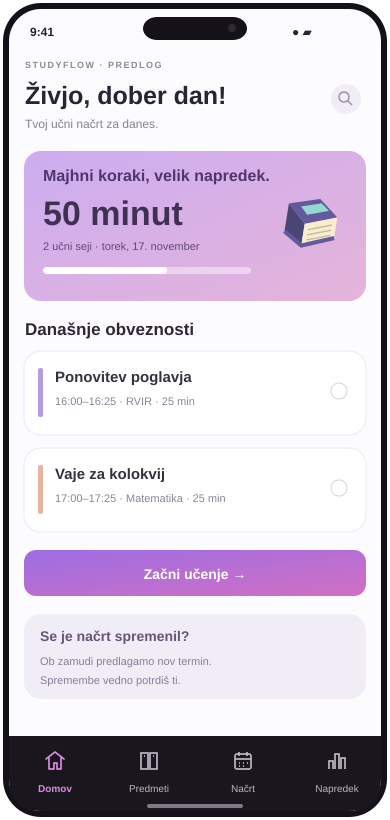
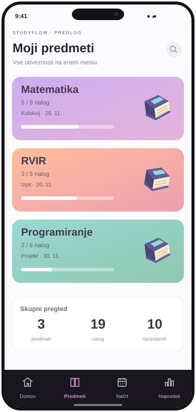
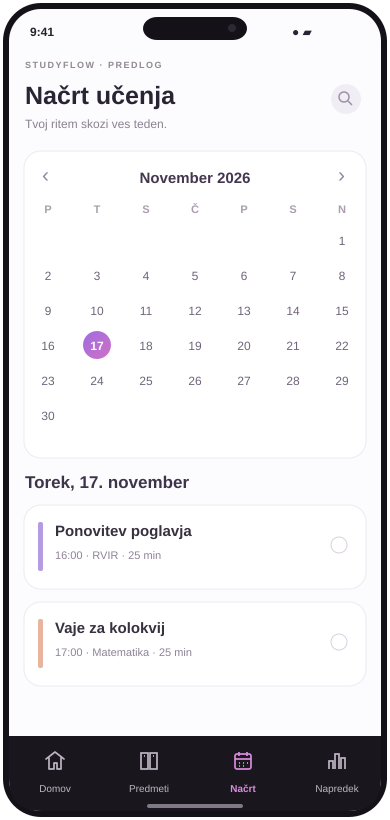
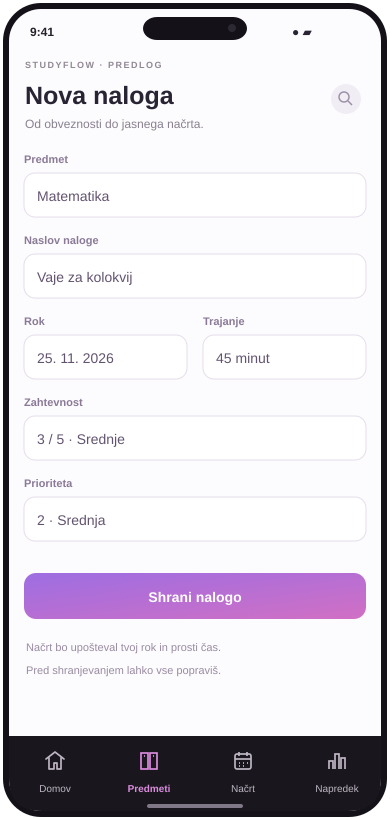
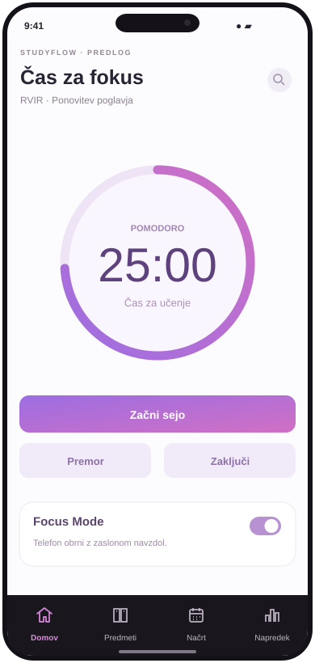
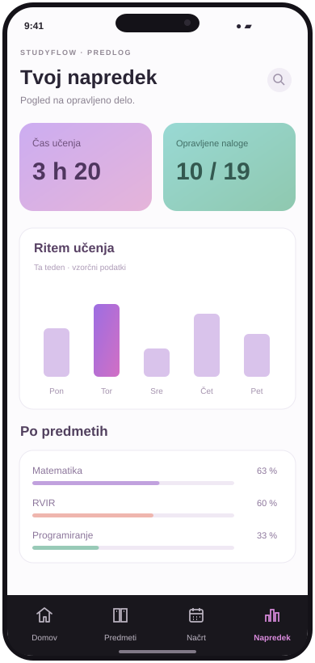

RVIR · začetna zasnova
Dokumentacija
StudyFlow
Predlogi zaslonov s pastelnimi karticami in vijoličnimi poudarki. Podatki so izmišljeni, končni izgled aplikacije bomo določili skupaj z ekipo.





